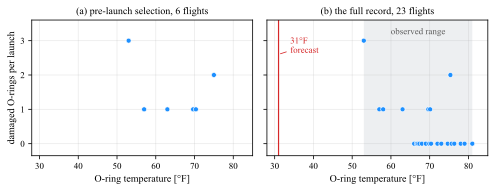

Plotting
\(\newcommand{\footnotename}{footnote}\)
\(\def \LWRfootnote {1}\)
\(\newcommand {\footnote }[2][\LWRfootnote ]{{}^{\mathrm {#1}}}\)
\(\newcommand {\footnotemark }[1][\LWRfootnote ]{{}^{\mathrm {#1}}}\)
\(\let \LWRorighspace \hspace \)
\(\renewcommand {\hspace }{\ifstar \LWRorighspace \LWRorighspace }\)
\(\newcommand {\TextOrMath }[2]{#2}\)
\(\newcommand {\mathnormal }[1]{{#1}}\)
\(\newcommand \ensuremath [1]{#1}\)
\(\newcommand {\LWRframebox }[2][]{\fbox {#2}} \newcommand {\framebox }[1][]{\LWRframebox } \)
\(\newcommand {\setlength }[2]{}\)
\(\newcommand {\addtolength }[2]{}\)
\(\newcommand {\setcounter }[2]{}\)
\(\newcommand {\addtocounter }[2]{}\)
\(\newcommand {\arabic }[1]{}\)
\(\newcommand {\number }[1]{}\)
\(\newcommand {\noalign }[1]{\text {#1}\notag \\}\)
\(\newcommand {\cline }[1]{}\)
\(\newcommand {\directlua }[1]{\text {(directlua)}}\)
\(\newcommand {\luatexdirectlua }[1]{\text {(directlua)}}\)
\(\newcommand {\protect }{}\)
\(\def \LWRabsorbnumber #1 {}\)
\(\def \LWRabsorbquotenumber "#1 {}\)
\(\newcommand {\LWRabsorboption }[1][]{}\)
\(\newcommand {\LWRabsorbtwooptions }[1][]{\LWRabsorboption }\)
\(\def \mathchar {\ifnextchar "\LWRabsorbquotenumber \LWRabsorbnumber }\)
\(\def \mathcode #1={\mathchar }\)
\(\let \delcode \mathcode \)
\(\let \delimiter \mathchar \)
\(\def \oe {\unicode {x0153}}\)
\(\def \OE {\unicode {x0152}}\)
\(\def \ae {\unicode {x00E6}}\)
\(\def \AE {\unicode {x00C6}}\)
\(\def \aa {\unicode {x00E5}}\)
\(\def \AA {\unicode {x00C5}}\)
\(\def \o {\unicode {x00F8}}\)
\(\def \O {\unicode {x00D8}}\)
\(\def \l {\unicode {x0142}}\)
\(\def \L {\unicode {x0141}}\)
\(\def \ss {\unicode {x00DF}}\)
\(\def \SS {\unicode {x1E9E}}\)
\(\def \dag {\unicode {x2020}}\)
\(\def \ddag {\unicode {x2021}}\)
\(\def \P {\unicode {x00B6}}\)
\(\def \copyright {\unicode {x00A9}}\)
\(\def \pounds {\unicode {x00A3}}\)
\(\let \LWRref \ref \)
\(\renewcommand {\ref }{\ifstar \LWRref \LWRref }\)
\( \newcommand {\multicolumn }[3]{#3}\)
\(\require {textcomp}\)
\( \newcommand {\abs }[1]{\lvert #1\rvert } \)
\( \DeclareMathOperator {\sign }{sign} \)
\(\newcommand {\intertext }[1]{\text {#1}\notag \\}\)
\(\let \Hat \hat \)
\(\let \Check \check \)
\(\let \Tilde \tilde \)
\(\let \Acute \acute \)
\(\let \Grave \grave \)
\(\let \Dot \dot \)
\(\let \Ddot \ddot \)
\(\let \Breve \breve \)
\(\let \Bar \bar \)
\(\let \Vec \vec \)
\(\newcommand {\bm }[1]{\boldsymbol {#1}}\)
\(\require {physics}\)
\(\newcommand {\LWRphystrig }[2]{\ifblank {#1}{\textrm {#2}}{\textrm {#2}^{#1}}}\)
\(\renewcommand {\sin }[1][]{\LWRphystrig {#1}{sin}}\)
\(\renewcommand {\sinh }[1][]{\LWRphystrig {#1}{sinh}}\)
\(\renewcommand {\arcsin }[1][]{\LWRphystrig {#1}{arcsin}}\)
\(\renewcommand {\asin }[1][]{\LWRphystrig {#1}{asin}}\)
\(\renewcommand {\cos }[1][]{\LWRphystrig {#1}{cos}}\)
\(\renewcommand {\cosh }[1][]{\LWRphystrig {#1}{cosh}}\)
\(\renewcommand {\arccos }[1][]{\LWRphystrig {#1}{arcos}}\)
\(\renewcommand {\acos }[1][]{\LWRphystrig {#1}{acos}}\)
\(\renewcommand {\tan }[1][]{\LWRphystrig {#1}{tan}}\)
\(\renewcommand {\tanh }[1][]{\LWRphystrig {#1}{tanh}}\)
\(\renewcommand {\arctan }[1][]{\LWRphystrig {#1}{arctan}}\)
\(\renewcommand {\atan }[1][]{\LWRphystrig {#1}{atan}}\)
\(\renewcommand {\csc }[1][]{\LWRphystrig {#1}{csc}}\)
\(\renewcommand {\csch }[1][]{\LWRphystrig {#1}{csch}}\)
\(\renewcommand {\arccsc }[1][]{\LWRphystrig {#1}{arccsc}}\)
\(\renewcommand {\acsc }[1][]{\LWRphystrig {#1}{acsc}}\)
\(\renewcommand {\sec }[1][]{\LWRphystrig {#1}{sec}}\)
\(\renewcommand {\sech }[1][]{\LWRphystrig {#1}{sech}}\)
\(\renewcommand {\arcsec }[1][]{\LWRphystrig {#1}{arcsec}}\)
\(\renewcommand {\asec }[1][]{\LWRphystrig {#1}{asec}}\)
\(\renewcommand {\cot }[1][]{\LWRphystrig {#1}{cot}}\)
\(\renewcommand {\coth }[1][]{\LWRphystrig {#1}{coth}}\)
\(\renewcommand {\arccot }[1][]{\LWRphystrig {#1}{arccot}}\)
\(\renewcommand {\acot }[1][]{\LWRphystrig {#1}{acot}}\)
\(\require {cancel}\)
\(\newcommand {\underuparrow }[1]{{\underset {\uparrow }{#1}}}\)
\(\DeclareMathOperator *{\argmax }{argmax}\)
\(\DeclareMathOperator *{\argmin }{arg\,min}\)
\(\def \E [#1]{\mathbb {E}\!\left [ #1 \right ]}\)
\(\def \Var [#1]{\operatorname {Var}\!\left [ #1 \right ]}\)
\(\def \Cov [#1]{\operatorname {Cov}\!\left [ #1 \right ]}\)
\(\newcommand {\floor }[1]{\lfloor #1 \rfloor }\)
\(\newcommand {\DTFTH }{ H \brk 1{e^{j\omega }}}\)
\(\newcommand {\DTFTX }{ X\brk 1{e^{j\omega }}}\)
\(\newcommand {\DFTtr }[1]{\mathrm {DFT}\left \{#1\right \}}\)
\(\newcommand {\DTFTtr }[1]{\mathrm {DTFT}\left \{#1\right \}}\)
\(\newcommand {\DTFTtrI }[1]{\mathrm {DTFT^{-1}}\left \{#1\right \}}\)
\(\newcommand {\Ftr }[1]{ \mathcal {F}\left \{#1\right \}}\)
\(\newcommand {\FtrI }[1]{ \mathcal {F}^{-1}\left \{#1\right \}}\)
\(\newcommand {\Zover }{\overset {\mathscr Z}{\Longleftrightarrow }}\)
\(\renewcommand {\real }{\mathbb {R}}\)
\(\newcommand {\ba }{\mathbf {a}}\)
\(\newcommand {\bb }{\mathbf {b}}\)
\(\newcommand {\bc }{\mathbf {c}}\)
\(\newcommand {\bd }{\mathbf {d}}\)
\(\newcommand {\be }{\mathbf {e}}\)
\(\newcommand {\bf }{\mathbf {f}}\)
\(\newcommand {\bg }{\mathbf {g}}\)
\(\newcommand {\bh }{\mathbf {h}}\)
\(\newcommand {\bi }{\mathbf {i}}\)
\(\newcommand {\bn }{\mathbf {n}}\)
\(\newcommand {\bo }{\mathbf {o}}\)
\(\newcommand {\bp }{\mathbf {p}}\)
\(\newcommand {\bq }{\mathbf {q}}\)
\(\newcommand {\br }{\mathbf {r}}\)
\(\newcommand {\bs }{\mathbf {s}}\)
\(\newcommand {\bt }{\mathbf {t}}\)
\(\newcommand {\bu }{\mathbf {u}}\)
\(\newcommand {\bv }{\mathbf {v}}\)
\(\newcommand {\bw }{\mathbf {w}}\)
\(\newcommand {\bx }{\mathbf {x}}\)
\(\newcommand {\bxx }{\mathbf {xx}}\)
\(\newcommand {\bxy }{\mathbf {xy}}\)
\(\newcommand {\by }{\mathbf {y}}\)
\(\newcommand {\byx }{\mathbf {yx}}\)
\(\newcommand {\byy }{\mathbf {yy}}\)
\(\newcommand {\bz }{\mathbf {z}}\)
\(\newcommand {\bA }{\mathbf {A}}\)
\(\newcommand {\bB }{\mathbf {B}}\)
\(\newcommand {\bC }{\mathbf {C}}\)
\(\newcommand {\bD }{\mathbf {D}}\)
\(\newcommand {\bH }{\mathbf {H}}\)
\(\newcommand {\bI }{\mathbf {I}}\)
\(\newcommand {\bK }{\mathbf {K}}\)
\(\newcommand {\bM }{\mathbf {M}}\)
\(\newcommand {\bP }{\mathbf {P}}\)
\(\newcommand {\bQ }{\mathbf {Q}}\)
\(\newcommand {\bR }{\mathbf {R}}\)
\(\newcommand {\bS }{\mathbf {S}}\)
\(\newcommand {\bU }{\mathbf {U}}\)
\(\newcommand {\bW }{\mathbf {W}}\)
\(\newcommand {\bX }{\mathbf {X}}\)
\(\newcommand {\bY }{\mathbf {Y}}\)
\(\newcommand {\bZ }{\mathbf {Z}}\)
\(\newcommand {\balpha }{\bm {\alpha }}\)
\(\newcommand {\bth }{{\bm {\theta }}}\)
\(\newcommand {\bepsilon }{{\bm {\epsilon }}}\)
\(\newcommand {\bmu }{{\bm {\mu }}}\)
\(\newcommand {\bgamma }{{\bm {\gamma }}}\)
\(\newcommand {\bphi }{\bm {\phi }}\)
\(\newcommand {\bOne }{\mathbf {1}}\)
\(\newcommand {\bZero }{\mathbf {0}}\)
\(\newcommand {\indFunc }{\mathbb {1}}\)
\(\newcommand {\btx }{\tilde {\bx }}\)
\(\newcommand {\loss }{\mathcal {L}}\)
\(\newcommand {\score }{\mathcal {S}}\)
\(\newcommand {\SSE }{\mathrm {SSE}}\)
\(\newcommand {\SST }{\mathrm {SST}}\)
\(\newcommand {\SSR }{\mathrm {SSR}}\)
\(\newcommand {\MSE }{\mathrm {MSE}}\)
\(\newcommand {\RMSE }{\mathrm {RMSE}}\)
\(\newcommand {\toprule }[1][]{\hline }\)
\(\let \midrule \toprule \)
\(\let \bottomrule \toprule \)
\(\def \LWRbooktabscmidruleparen (#1)#2{}\)
\(\newcommand {\LWRbooktabscmidrulenoparen }[1]{}\)
\(\newcommand {\cmidrule }[1][]{\ifnextchar (\LWRbooktabscmidruleparen \LWRbooktabscmidrulenoparen }\)
\(\newcommand {\morecmidrules }{}\)
\(\newcommand {\specialrule }[3]{\hline }\)
\(\newcommand {\addlinespace }[1][]{}\)
\(\newcommand {\LWRsubmultirow }[2][]{#2}\)
\(\newcommand {\LWRmultirow }[2][]{\LWRsubmultirow }\)
\(\newcommand {\multirow }[2][]{\LWRmultirow }\)
\(\newcommand {\mrowcell }{}\)
\(\newcommand {\mcolrowcell }{}\)
\(\newcommand {\STneed }[1]{}\)
\(\newcommand {\tcbset }[1]{}\)
\(\newcommand {\tcbsetforeverylayer }[1]{}\)
\(\newcommand {\tcbox }[2][]{\boxed {\text {#2}}}\)
\(\newcommand {\tcboxfit }[2][]{\boxed {#2}}\)
\(\newcommand {\tcblower }{}\)
\(\newcommand {\tcbline }{}\)
\(\newcommand {\tcbtitle }{}\)
\(\newcommand {\tcbsubtitle [2][]{\mathrm {#2}}}\)
\(\newcommand {\tcboxmath }[2][]{\boxed {#2}}\)
\(\newcommand {\tcbhighmath }[2][]{\boxed {#2}}\)
\(\require {colortbl}\)
\(\let \LWRorigcolumncolor \columncolor \)
\(\renewcommand {\columncolor }[2][named]{\LWRorigcolumncolor [#1]{#2}\LWRabsorbtwooptions }\)
\(\let \LWRorigrowcolor \rowcolor \)
\(\renewcommand {\rowcolor }[2][named]{\LWRorigrowcolor [#1]{#2}\LWRabsorbtwooptions }\)
\(\let \LWRorigcellcolor \cellcolor \)
\(\renewcommand {\cellcolor }[2][named]{\LWRorigcellcolor [#1]{#2}\LWRabsorbtwooptions }\)
\(\newcommand {\tothe }[1]{^{#1}}\)
\(\newcommand {\raiseto }[2]{{#2}^{#1}}\)
\(\newcommand {\LWRsiunitxEND }{}\)
\(\def \LWRsiunitxang #1;#2;#3;#4\LWRsiunitxEND {\ifblank {#1}{}{\num {#1}\degree }\ifblank {#2}{}{\num {#2}^{\unicode {x2032}}}\ifblank {#3}{}{\num {#3}^{\unicode {x2033}}}}\)
\(\newcommand {\ang }[2][]{\LWRsiunitxang #2;;;\LWRsiunitxEND }\)
\(\def \LWRsiunitxdistribunit {}\)
\(\newcommand {\LWRsiunitxENDTWO }{}\)
\(\def \LWRsiunitxprintdecimalsubtwo #1,#2,#3\LWRsiunitxENDTWO {\ifblank {#1}{0}{\mathrm {#1}}\ifblank {#2}{}{{\LWRsiunitxdecimal }\mathrm {#2}}}\)
\(\def \LWRsiunitxprintdecimalsub #1.#2.#3\LWRsiunitxEND {\LWRsiunitxprintdecimalsubtwo #1,,\LWRsiunitxENDTWO \ifblank {#2}{}{{\LWRsiunitxdecimal }\LWRsiunitxprintdecimalsubtwo
#2,,\LWRsiunitxENDTWO }}\)
\(\newcommand {\LWRsiunitxprintdecimal }[1]{\LWRsiunitxprintdecimalsub #1...\LWRsiunitxEND }\)
\(\def \LWRsiunitxnumplus #1+#2+#3\LWRsiunitxEND {\ifblank {#2}{\LWRsiunitxprintdecimal {#1}}{\ifblank {#1}{\LWRsiunitxprintdecimal {#2}}{\LWRsiunitxprintdecimal {#1}\unicode
{x02B}\LWRsiunitxprintdecimal {#2}}}\LWRsiunitxdistribunit }\)
\(\def \LWRsiunitxnumminus #1-#2-#3\LWRsiunitxEND {\ifblank {#2}{\LWRsiunitxnumplus #1+++\LWRsiunitxEND }{\ifblank {#1}{}{\LWRsiunitxprintdecimal {#1}}\unicode {x02212}\LWRsiunitxprintdecimal
{#2}\LWRsiunitxdistribunit }}\)
\(\def \LWRsiunitxnumpmmacro #1\pm #2\pm #3\LWRsiunitxEND {\ifblank {#2}{\LWRsiunitxnumminus #1---\LWRsiunitxEND }{\LWRsiunitxprintdecimal {#1}\unicode {x0B1}\LWRsiunitxprintdecimal
{#2}\LWRsiunitxdistribunit }}\)
\(\def \LWRsiunitxnumpm #1+-#2+-#3\LWRsiunitxEND {\ifblank {#2}{\LWRsiunitxnumpmmacro #1\pm \pm \pm \LWRsiunitxEND }{\LWRsiunitxprintdecimal {#1}\unicode {x0B1}\LWRsiunitxprintdecimal
{#2}\LWRsiunitxdistribunit }}\)
\(\newcommand {\LWRsiunitxnumscientific }[2]{\ifblank {#1}{}{\ifstrequal {#1}{-}{-}{\LWRsiunitxprintdecimal {#1}\times }}10^{\LWRsiunitxprintdecimal {#2}}\LWRsiunitxdistribunit }\)
\(\def \LWRsiunitxnumD #1D#2D#3\LWRsiunitxEND {\ifblank {#2}{\LWRsiunitxnumpm #1+-+-\LWRsiunitxEND }{\mathrm {\LWRsiunitxnumscientific {#1}{#2}}}}\)
\(\def \LWRsiunitxnumd #1d#2d#3\LWRsiunitxEND {\ifblank {#2}{\LWRsiunitxnumD #1DDD\LWRsiunitxEND }{\mathrm {\LWRsiunitxnumscientific {#1}{#2}}}}\)
\(\def \LWRsiunitxnumE #1E#2E#3\LWRsiunitxEND {\ifblank {#2}{\LWRsiunitxnumd #1ddd\LWRsiunitxEND }{\mathrm {\LWRsiunitxnumscientific {#1}{#2}}}}\)
\(\def \LWRsiunitxnume #1e#2e#3\LWRsiunitxEND {\ifblank {#2}{\LWRsiunitxnumE #1EEE\LWRsiunitxEND }{\mathrm {\LWRsiunitxnumscientific {#1}{#2}}}}\)
\(\def \LWRsiunitxnumx #1x#2x#3x#4\LWRsiunitxEND {\ifblank {#2}{\LWRsiunitxnume #1eee\LWRsiunitxEND }{\ifblank {#3}{\LWRsiunitxnume #1eee\LWRsiunitxEND \times \LWRsiunitxnume
#2eee\LWRsiunitxEND }{\LWRsiunitxnume #1eee\LWRsiunitxEND \times \LWRsiunitxnume #2eee\LWRsiunitxEND \times \LWRsiunitxnume #3eee\LWRsiunitxEND }}}\)
\(\newcommand {\num }[2][]{\LWRsiunitxnumx #2xxxxx\LWRsiunitxEND }\)
\(\newcommand {\si }[2][]{\mathrm {\gsubstitute {#2}{~}{\,}}}\)
\(\def \LWRsiunitxSIopt #1[#2]#3{\def \LWRsiunitxdistribunit {\,\si {#3}}{#2}\num {#1}\def \LWRsiunitxdistribunit {}}\)
\(\newcommand {\LWRsiunitxSI }[2]{\def \LWRsiunitxdistribunit {\,\si {#2}}\num {#1}\def \LWRsiunitxdistribunit {}}\)
\(\newcommand {\SI }[2][]{\ifnextchar [{\LWRsiunitxSIopt {#2}}{\LWRsiunitxSI {#2}}}\)
\(\newcommand {\numlist }[2][]{\text {#2}}\)
\(\newcommand {\numrange }[3][]{\num {#2}\ \LWRsiunitxrangephrase \ \num {#3}}\)
\(\newcommand {\SIlist }[3][]{\text {#2}\,\si {#3}}\)
\(\newcommand {\SIrange }[4][]{\num {#2}\,#4\ \LWRsiunitxrangephrase \ \num {#3}\,#4}\)
\(\newcommand {\tablenum }[2][]{\mathrm {#2}}\)
\(\newcommand {\ampere }{\mathrm {A}}\)
\(\newcommand {\candela }{\mathrm {cd}}\)
\(\newcommand {\kelvin }{\mathrm {K}}\)
\(\newcommand {\kilogram }{\mathrm {kg}}\)
\(\newcommand {\metre }{\mathrm {m}}\)
\(\newcommand {\mole }{\mathrm {mol}}\)
\(\newcommand {\second }{\mathrm {s}}\)
\(\newcommand {\becquerel }{\mathrm {Bq}}\)
\(\newcommand {\degreeCelsius }{\unicode {x2103}}\)
\(\newcommand {\coulomb }{\mathrm {C}}\)
\(\newcommand {\farad }{\mathrm {F}}\)
\(\newcommand {\gray }{\mathrm {Gy}}\)
\(\newcommand {\hertz }{\mathrm {Hz}}\)
\(\newcommand {\henry }{\mathrm {H}}\)
\(\newcommand {\joule }{\mathrm {J}}\)
\(\newcommand {\katal }{\mathrm {kat}}\)
\(\newcommand {\lumen }{\mathrm {lm}}\)
\(\newcommand {\lux }{\mathrm {lx}}\)
\(\newcommand {\newton }{\mathrm {N}}\)
\(\newcommand {\ohm }{\mathrm {\Omega }}\)
\(\newcommand {\pascal }{\mathrm {Pa}}\)
\(\newcommand {\radian }{\mathrm {rad}}\)
\(\newcommand {\siemens }{\mathrm {S}}\)
\(\newcommand {\sievert }{\mathrm {Sv}}\)
\(\newcommand {\steradian }{\mathrm {sr}}\)
\(\newcommand {\tesla }{\mathrm {T}}\)
\(\newcommand {\volt }{\mathrm {V}}\)
\(\newcommand {\watt }{\mathrm {W}}\)
\(\newcommand {\weber }{\mathrm {Wb}}\)
\(\newcommand {\day }{\mathrm {d}}\)
\(\newcommand {\degree }{\mathrm {^\circ }}\)
\(\newcommand {\hectare }{\mathrm {ha}}\)
\(\newcommand {\hour }{\mathrm {h}}\)
\(\newcommand {\litre }{\mathrm {l}}\)
\(\newcommand {\liter }{\mathrm {L}}\)
\(\newcommand {\arcminute }{^\prime }\)
\(\newcommand {\minute }{\mathrm {min}}\)
\(\newcommand {\arcsecond }{^{\prime \prime }}\)
\(\newcommand {\tonne }{\mathrm {t}}\)
\(\newcommand {\astronomicalunit }{au}\)
\(\newcommand {\atomicmassunit }{u}\)
\(\newcommand {\bohr }{\mathit {a}_0}\)
\(\newcommand {\clight }{\mathit {c}_0}\)
\(\newcommand {\dalton }{\mathrm {D}_\mathrm {a}}\)
\(\newcommand {\electronmass }{\mathit {m}_{\mathrm {e}}}\)
\(\newcommand {\electronvolt }{\mathrm {eV}}\)
\(\newcommand {\elementarycharge }{\mathit {e}}\)
\(\newcommand {\hartree }{\mathit {E}_{\mathrm {h}}}\)
\(\newcommand {\planckbar }{\mathit {\unicode {x210F}}}\)
\(\newcommand {\angstrom }{\mathrm {\unicode {x212B}}}\)
\(\let \LWRorigbar \bar \)
\(\newcommand {\bar }{\mathrm {bar}}\)
\(\newcommand {\barn }{\mathrm {b}}\)
\(\newcommand {\bel }{\mathrm {B}}\)
\(\newcommand {\decibel }{\mathrm {dB}}\)
\(\newcommand {\knot }{\mathrm {kn}}\)
\(\newcommand {\mmHg }{\mathrm {mmHg}}\)
\(\newcommand {\nauticalmile }{\mathrm {M}}\)
\(\newcommand {\neper }{\mathrm {Np}}\)
\(\newcommand {\yocto }{\mathrm {y}}\)
\(\newcommand {\zepto }{\mathrm {z}}\)
\(\newcommand {\atto }{\mathrm {a}}\)
\(\newcommand {\femto }{\mathrm {f}}\)
\(\newcommand {\pico }{\mathrm {p}}\)
\(\newcommand {\nano }{\mathrm {n}}\)
\(\newcommand {\micro }{\mathrm {\unicode {x00B5}}}\)
\(\newcommand {\milli }{\mathrm {m}}\)
\(\newcommand {\centi }{\mathrm {c}}\)
\(\newcommand {\deci }{\mathrm {d}}\)
\(\newcommand {\deca }{\mathrm {da}}\)
\(\newcommand {\hecto }{\mathrm {h}}\)
\(\newcommand {\kilo }{\mathrm {k}}\)
\(\newcommand {\mega }{\mathrm {M}}\)
\(\newcommand {\giga }{\mathrm {G}}\)
\(\newcommand {\tera }{\mathrm {T}}\)
\(\newcommand {\peta }{\mathrm {P}}\)
\(\newcommand {\exa }{\mathrm {E}}\)
\(\newcommand {\zetta }{\mathrm {Z}}\)
\(\newcommand {\yotta }{\mathrm {Y}}\)
\(\newcommand {\percent }{\mathrm {\%}}\)
\(\newcommand {\meter }{\mathrm {m}}\)
\(\newcommand {\metre }{\mathrm {m}}\)
\(\newcommand {\gram }{\mathrm {g}}\)
\(\newcommand {\kg }{\kilo \gram }\)
\(\newcommand {\of }[1]{_{\mathrm {#1}}}\)
\(\newcommand {\squared }{^2}\)
\(\newcommand {\square }[1]{\mathrm {#1}^2}\)
\(\newcommand {\cubed }{^3}\)
\(\newcommand {\cubic }[1]{\mathrm {#1}^3}\)
\(\newcommand {\per }{\,\mathrm {/}}\)
\(\newcommand {\celsius }{\unicode {x2103}}\)
\(\newcommand {\fg }{\femto \gram }\)
\(\newcommand {\pg }{\pico \gram }\)
\(\newcommand {\ng }{\nano \gram }\)
\(\newcommand {\ug }{\micro \gram }\)
\(\newcommand {\mg }{\milli \gram }\)
\(\newcommand {\g }{\gram }\)
\(\newcommand {\kg }{\kilo \gram }\)
\(\newcommand {\amu }{\mathrm {u}}\)
\(\newcommand {\pm }{\pico \metre }\)
\(\newcommand {\nm }{\nano \metre }\)
\(\newcommand {\um }{\micro \metre }\)
\(\newcommand {\mm }{\milli \metre }\)
\(\newcommand {\cm }{\centi \metre }\)
\(\newcommand {\dm }{\deci \metre }\)
\(\newcommand {\m }{\metre }\)
\(\newcommand {\km }{\kilo \metre }\)
\(\newcommand {\as }{\atto \second }\)
\(\newcommand {\fs }{\femto \second }\)
\(\newcommand {\ps }{\pico \second }\)
\(\newcommand {\ns }{\nano \second }\)
\(\newcommand {\us }{\micro \second }\)
\(\newcommand {\ms }{\milli \second }\)
\(\newcommand {\s }{\second }\)
\(\newcommand {\fmol }{\femto \mol }\)
\(\newcommand {\pmol }{\pico \mol }\)
\(\newcommand {\nmol }{\nano \mol }\)
\(\newcommand {\umol }{\micro \mol }\)
\(\newcommand {\mmol }{\milli \mol }\)
\(\newcommand {\mol }{\mol }\)
\(\newcommand {\kmol }{\kilo \mol }\)
\(\newcommand {\pA }{\pico \ampere }\)
\(\newcommand {\nA }{\nano \ampere }\)
\(\newcommand {\uA }{\micro \ampere }\)
\(\newcommand {\mA }{\milli \ampere }\)
\(\newcommand {\A }{\ampere }\)
\(\newcommand {\kA }{\kilo \ampere }\)
\(\newcommand {\ul }{\micro \litre }\)
\(\newcommand {\ml }{\milli \litre }\)
\(\newcommand {\l }{\litre }\)
\(\newcommand {\hl }{\hecto \litre }\)
\(\newcommand {\uL }{\micro \liter }\)
\(\newcommand {\mL }{\milli \liter }\)
\(\newcommand {\L }{\liter }\)
\(\newcommand {\hL }{\hecto \liter }\)
\(\newcommand {\mHz }{\milli \hertz }\)
\(\newcommand {\Hz }{\hertz }\)
\(\newcommand {\kHz }{\kilo \hertz }\)
\(\newcommand {\MHz }{\mega \hertz }\)
\(\newcommand {\GHz }{\giga \hertz }\)
\(\newcommand {\THz }{\tera \hertz }\)
\(\newcommand {\mN }{\milli \newton }\)
\(\newcommand {\N }{\newton }\)
\(\newcommand {\kN }{\kilo \newton }\)
\(\newcommand {\MN }{\mega \newton }\)
\(\newcommand {\Pa }{\pascal }\)
\(\newcommand {\kPa }{\kilo \pascal }\)
\(\newcommand {\MPa }{\mega \pascal }\)
\(\newcommand {\GPa }{\giga \pascal }\)
\(\newcommand {\mohm }{\milli \ohm }\)
\(\newcommand {\kohm }{\kilo \ohm }\)
\(\newcommand {\Mohm }{\mega \ohm }\)
\(\newcommand {\pV }{\pico \volt }\)
\(\newcommand {\nV }{\nano \volt }\)
\(\newcommand {\uV }{\micro \volt }\)
\(\newcommand {\mV }{\milli \volt }\)
\(\newcommand {\V }{\volt }\)
\(\newcommand {\kV }{\kilo \volt }\)
\(\newcommand {\W }{\watt }\)
\(\newcommand {\uW }{\micro \watt }\)
\(\newcommand {\mW }{\milli \watt }\)
\(\newcommand {\kW }{\kilo \watt }\)
\(\newcommand {\MW }{\mega \watt }\)
\(\newcommand {\GW }{\giga \watt }\)
\(\newcommand {\J }{\joule }\)
\(\newcommand {\uJ }{\micro \joule }\)
\(\newcommand {\mJ }{\milli \joule }\)
\(\newcommand {\kJ }{\kilo \joule }\)
\(\newcommand {\eV }{\electronvolt }\)
\(\newcommand {\meV }{\milli \electronvolt }\)
\(\newcommand {\keV }{\kilo \electronvolt }\)
\(\newcommand {\MeV }{\mega \electronvolt }\)
\(\newcommand {\GeV }{\giga \electronvolt }\)
\(\newcommand {\TeV }{\tera \electronvolt }\)
\(\newcommand {\kWh }{\kilo \watt \hour }\)
\(\newcommand {\F }{\farad }\)
\(\newcommand {\fF }{\femto \farad }\)
\(\newcommand {\pF }{\pico \farad }\)
\(\newcommand {\K }{\mathrm {K}}\)
\(\newcommand {\dB }{\mathrm {dB}}\)
\(\newcommand {\kibi }{\mathrm {Ki}}\)
\(\newcommand {\mebi }{\mathrm {Mi}}\)
\(\newcommand {\gibi }{\mathrm {Gi}}\)
\(\newcommand {\tebi }{\mathrm {Ti}}\)
\(\newcommand {\pebi }{\mathrm {Pi}}\)
\(\newcommand {\exbi }{\mathrm {Ei}}\)
\(\newcommand {\zebi }{\mathrm {Zi}}\)
\(\newcommand {\yobi }{\mathrm {Yi}}\)
\(\let \unit \si \)
\(\let \qty \SI \)
\(\let \qtylist \SIlist \)
\(\let \qtyrange \SIrange \)
\(\let \numproduct \num \)
\(\let \qtyproduct \SI \)
\(\let \complexnum \num \)
\(\newcommand {\complexqty }[3][]{(\complexnum {#2})\si {#3}}\)
\(\renewcommand {\pm }{\mathbin {\unicode {x00B1}}}\)
\(\def \LWRsiunitxrangephrase {\TextOrMath { }{\ }\protect \mbox {to}\TextOrMath { }{\ }}\)
\(\def \LWRsiunitxdecimal {.}\)
2 A Chart That Cost a Space Vehicle2.1 The Story
On the evening of 27 January 1986, engineers at Morton Thiokol recommended against launching the Space Shuttle Challenger the next morning. Their concern was the temperature: the rubber O-rings sealing the joints
of the solid rocket boosters stiffen in the cold, and the forecast overnight low was far below anything the program had flown in. They had the flight history to support the concern. But they did not have was a chart that clearly
showed it.
Fig. 2.1 is one of the charts they presented. It carries the whole damage record: twenty-four booster pairs, the O-ring temperature (\({}^\circ \)F)of each, and every
erosion and blow-by incident that had been found on recovery.
Read it against the rest of this document and it fails on nearly every count at once:
• The forty-eight rocket outlines are decoration: they encode nothing, and they consume most of the page (Sec. 11 ).
• Temperature, the quantity the entire argument turns on, is printed as rotated text inside each drawing rather than given a position on an axis, which is the one channel a reader decodes
accurately (Sec. 6 ).
• Damage is encoded as unexplained hatch patterns and the letters E , B and S .
• The flights are ordered by booster number, so the coldest launch on record sits in the middle of the second row with nothing to distinguish it. The relation between temperature and damage
is present in this chart and cannot be read from it.
2.2 The same data on axes
Fig. 2.2 plots the identical record. The horizontal axis is temperature, the vertical axis is the number of O-rings damaged on that launch, and nothing else is on the page.

Figure 2.2: The O-ring record of the \(23\) flights preceding Challenger , plotted twice.orings
from the R package DAAG , after the Presidential Commission report, Vol. 1, pp. 129–131.
The two panels differ only in which flights they contain. Panel (a) holds the flights that showed damage, which is roughly the selection the argument was built from: six points between \(53\) and \(75\,^{\circ }\)F, no
pattern, and therefore no case. Panel (b) restores the seventeen launches that came back clean. Those seventeen are not absence of evidence; each one is a launch at a known temperature that produced no damage, and they
are what turns a scatter of incidents into a relation. Every launch at or below \(63\,^{\circ }\)F was damaged. Only three of the nineteen above it were.
The vertical line is the forecast for the following morning, \(31\,^{\circ }\)F, which is \(22\,^{\circ }\)F colder than the coldest launch ever attempted.
What the case actually shows
The engineers were right, they had the data, and they presented it. The failure was in the encoding. A chart that places the causal variable on an axis takes about a minute to make from the same numbers, and it makes the
argument by itself. That is the claim this document defends: plotting is a technical skill with a right and a wrong answer, not a matter of presentation polish applied after the analysis is finished.